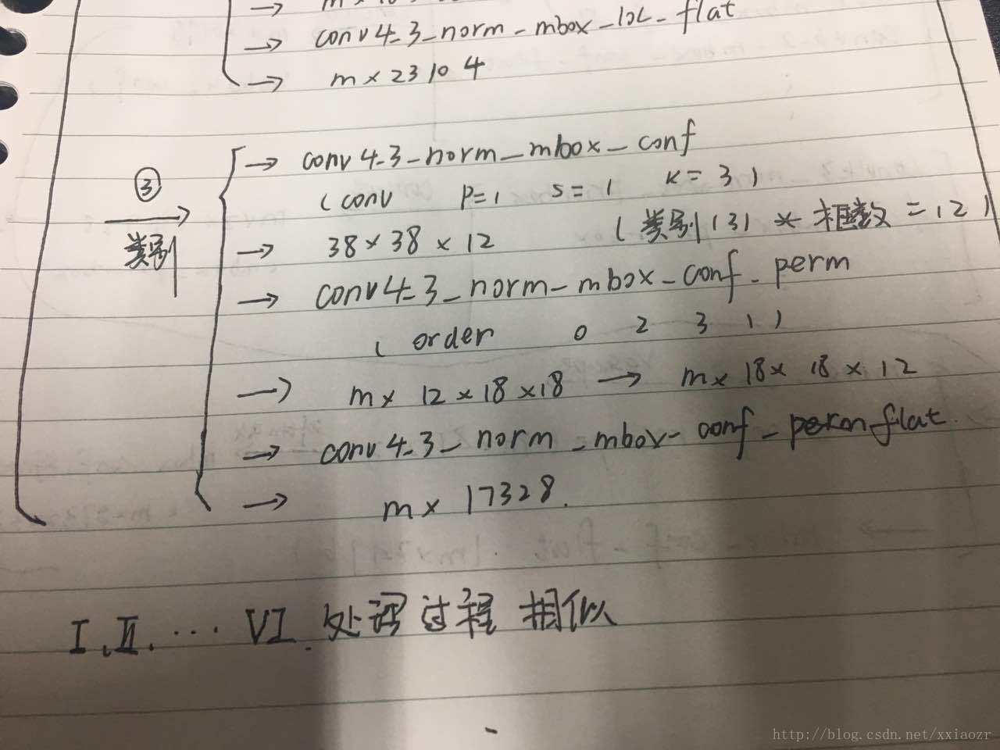

论文《SSD:Single Shot MultiBox Detector》 是图像分割的milestone论文。
引言
SSD方法带来的提升和贡献：
提出一个one-stage的目标检测方法：在速度比同为one-stage方法YOLO v1快的同时精度能达到two-stage方法Faster-RCNN的水平；
SSD的核心思想是用小尺寸卷积核对预设的bbox预测对应的classes score和coord offsets；
在不同尺寸的feature map上预测不同长宽比例的bbox提升检测精度；
实现了同时权衡精度和速度的端到端的目标检测训练框架；
在实验阶段进行了全方位的速度和性能的对比；
传统的目标检测会在 subimage 中的所有尺寸的box 进行检测，这种方法会检测所有可能的位置和尺寸，十分困难，例如fast-rcnn
SSD 会在网络中学到固定尺寸的box ,对和ground truth 重合度高的框，输入到loss,进行检测。对bounding box 的坐标进行预测，将目标检测的问题转化为坐标的回归问题。
在不用知道类别也可以定位的先验知识下，使用深度网络输出一些bounding box ,再预测这些bounding box 的类别分数。
Bounding Box
每个bounding box 可以转化成一个长度为4的向量，每一个值代表一个bounding box 的一个坐标值。然后可以把所有的bounding box 转化成一个一维的向量，将检测转换为回归问题。
Training Objective
训练时，将default box 和 ground truth Jaccard大于 0.5 的视为正样本，其他的视为负样本。只有正样本参与loss 的计算。先学习重合度高的框的位置信息，再学习类别信息。因为正样本的数目比较少，所以训练开销不大。
SSD模型结构
SSD基于VGG模型，上面一层扩展VGG，都是卷积层。
使用多尺度的方法，对con_4_3 , fc_7 , conv_6_2 , conv_8_2 , conv_9_2 的feature map进行处理。
conv_4_3 的default box 种类是 4 ，其他都是 6 。
对 conv_4_3（3838512 ） 进行说明，其他同理。
conv_4_3 会进行三部分的运算：
- 产生prior box
对于feature map 的每一点，会产生 4 个bounding box , 一共是5776 个bounding box ，根据缩放比例及位置信息可以对应到原图的位置 。和ground truth box 进行Jaccard 计算，x= 0 or 1 。feature map 的每一个点对应的长度为 16 的 一维向量 对应于四个框的四个坐标。为方便后面的学习将其拉直为一维的向量。和 2. 位置进行loss 计算。 - 位置
同上产生383816的feature map ，将其拉直为一维的向量。 - 类别

分别 concat 上面五层feature map 三个操作产生的一维向量
(tu)
最后输出 11（4+类别数）
Loss 的计算
应用
数据： 原始数据包括训练集，测试集，labmapfile ,test_name_size.txt ,test.txt ,trainval.txt
如果使用自己的数据，需要使用 creat_list.sh，来产生 test.txt，trainval.txt 和 test_name_size.txt 文件
运行修改后的creat_data.sh
creat_data.sh文件中的内容：
cur_dir：当前路径；
root_dir:caffe的根目录，即caffe_ssd；
脚本调用creat_annoset.py 文件
( 参数包括 ： –anno_type:detection or classificat ion;
–label-map-file:mapfile;
–check-label:检查是否重复的名字或者标签；
root路径：包含图片和annotation的路径；
listfile 文件：trainval.txt和text.txt;
outdir:store database file;
exampledir:link to database file
等)
程序会调用listfile中的trainval.txt 和text.txt 文件 ，读取图像及其标注信息
输出lmdb数据到outdir，并在exampledir下产生链接文件。
运行example/ssd/ssd_line.py
这个文件包括模型的定义，自动生成.prototxt文件，生成训练脚本并运行,保存训练模型等。
主要修改：text_data ,train_data ,save_dir等各种路径，job_name,model_name，gpu ,num_classes等
训练结果在data/results 路径下，是两个txt 文件，包含两个类别的bounding box 信息。